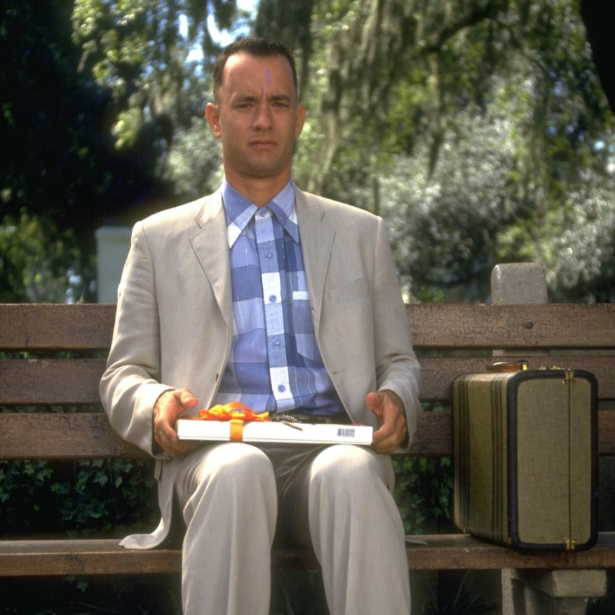
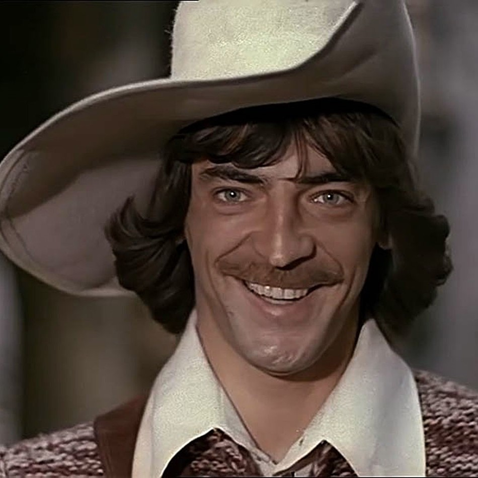
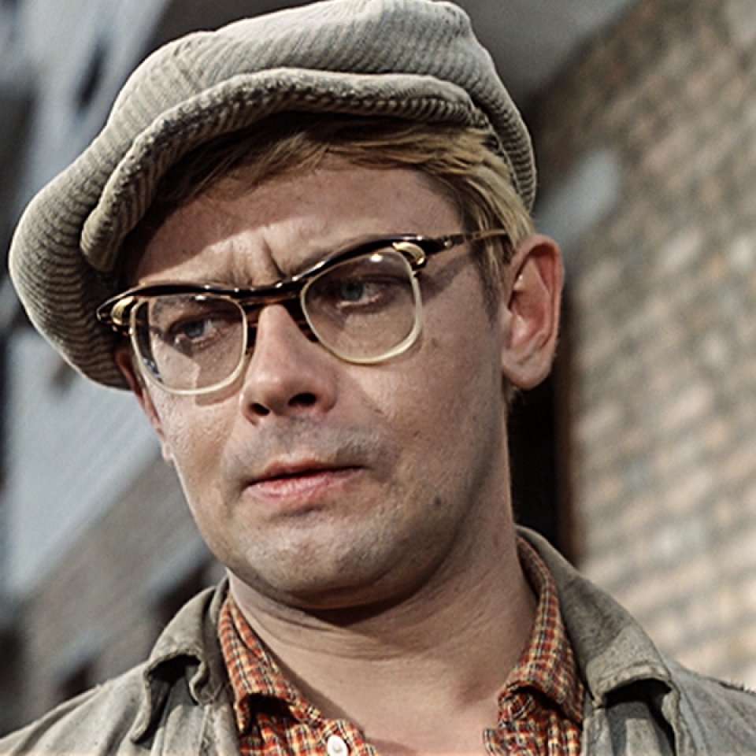
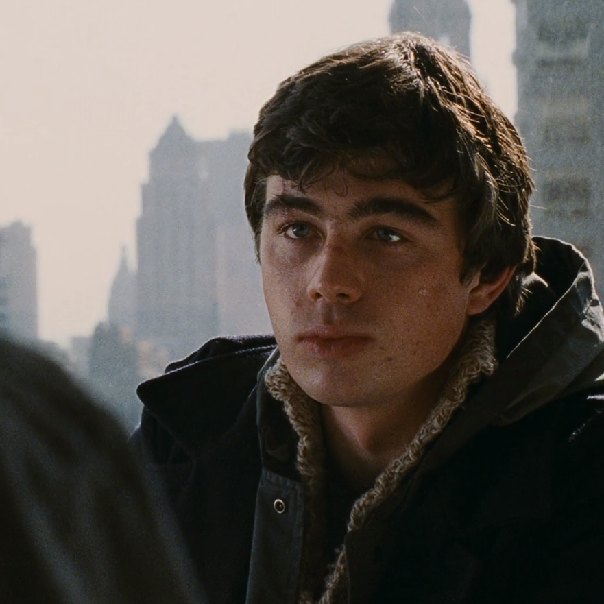
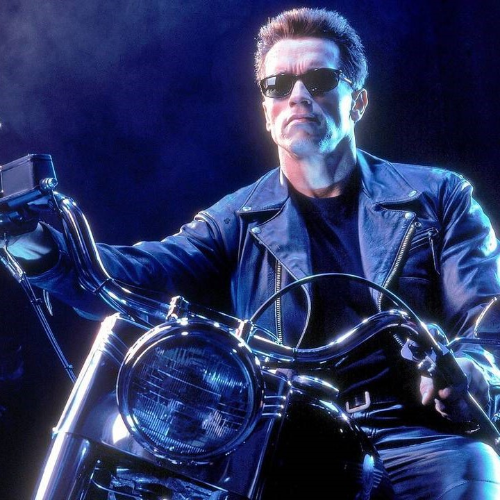
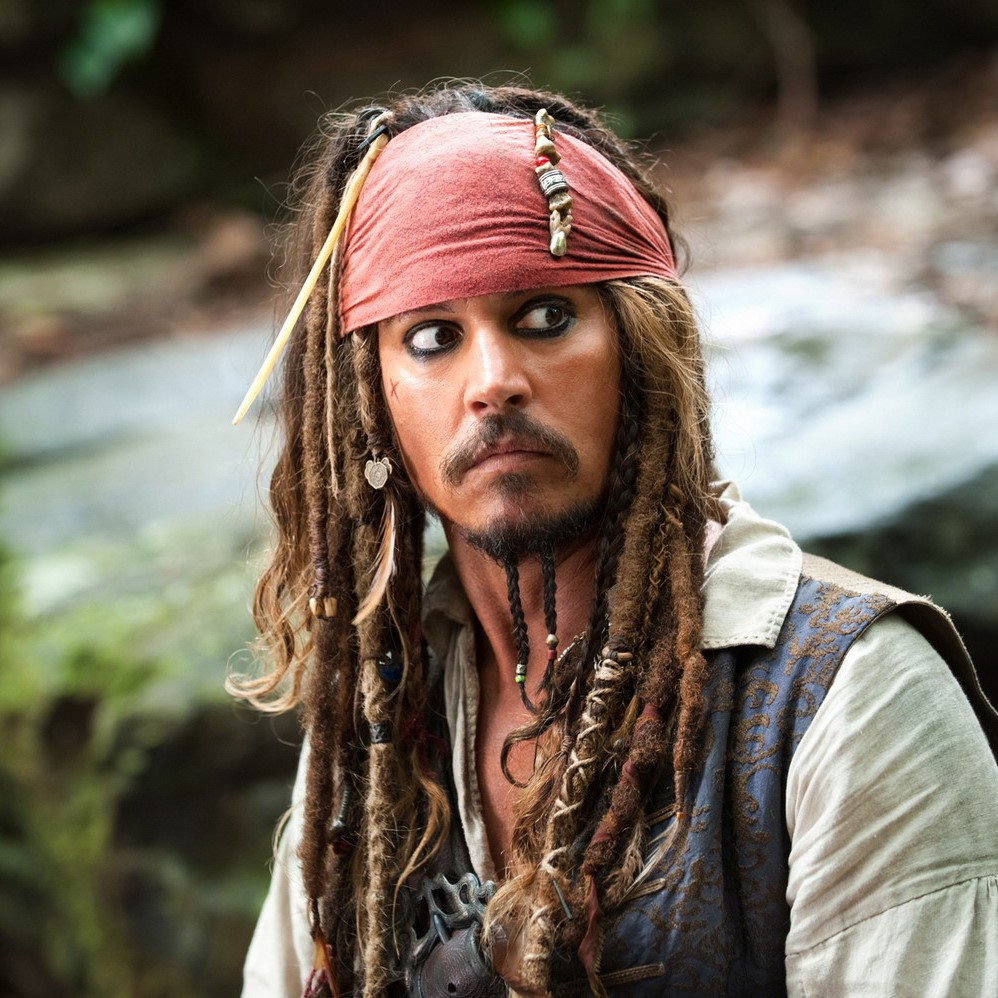
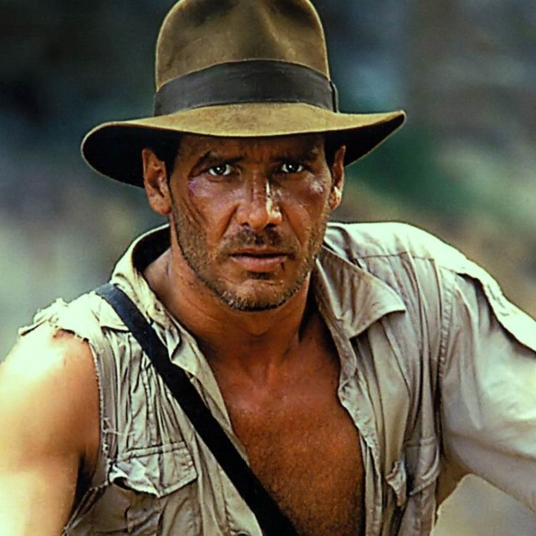
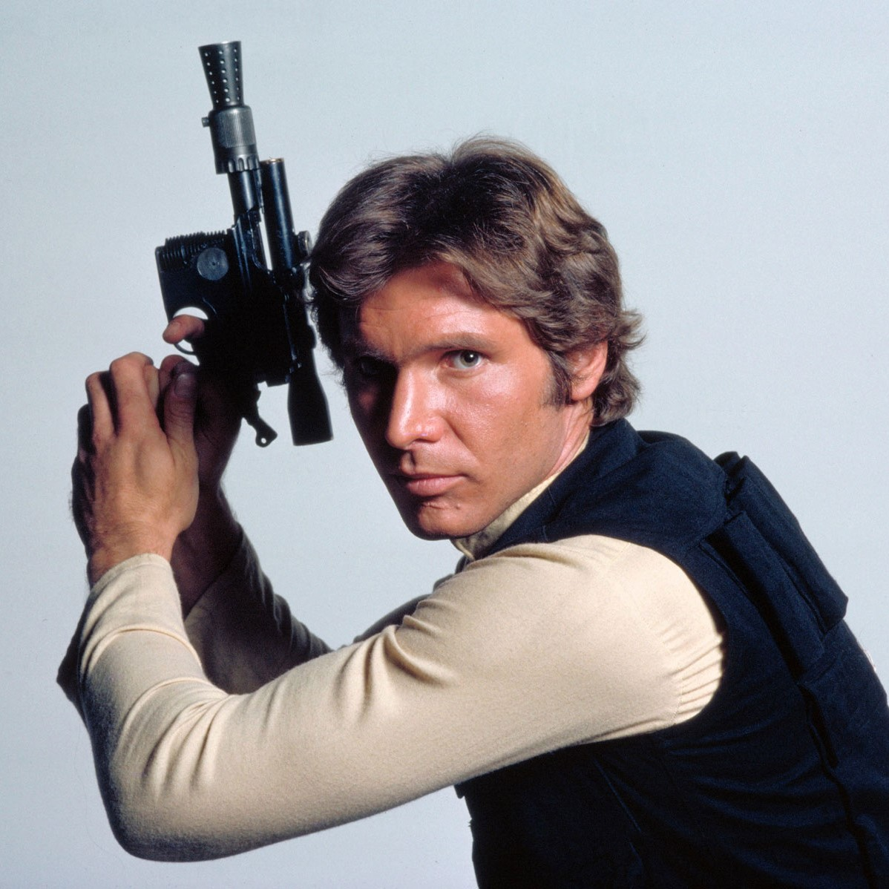
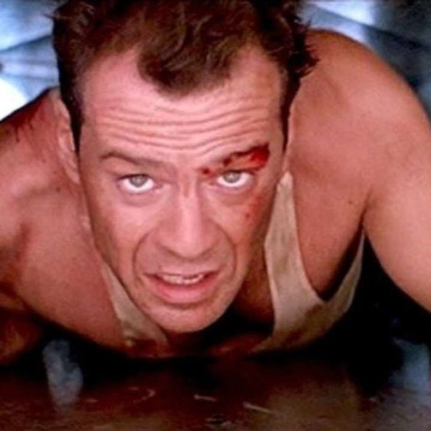
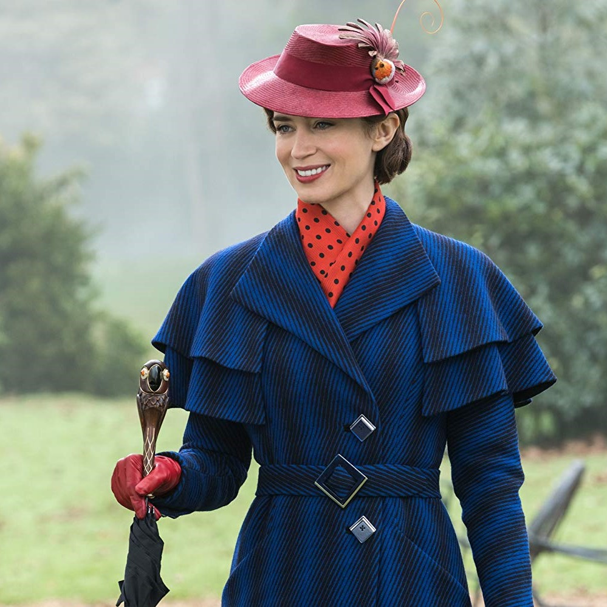

Топ героев кино
The Top 10
1 Форрест Гамп

Парень из штата Алабама с явными признаками умственной отсталости, который в итоге не только зарабатывает миллионы, но и играет в футбол, становится героем войны во Вьетнаме, выигрывает мировой чемпионат, завоевывает сердце любимой девушки.
2 Д`Артаньян

В поисках блестящей славы и карьеры герой приезжает из Гаскони в Париж. Это умный, обаятельный, бесстрашный молодой человек, которого сразу закручивает водоворот придворных интриг. Он находится в центре бесконечных дуэлей, стычек и приключений, но всегда выходит победителем благодаря своей необыкновенной удачливости, хитрому уму.
3 Шурик

Популярный герой комедий Леонида Гайдая, молодой студент, который постоянно ввязывался в разные интересные приключения. Его роль сыграл ныне покойный народный артист РСФСР и мастер дубляжа Александр Демьяненко.
4 Данила Багров

Главный персонаж обоих фильмов (Брат и Брат 2), младший брат Виктора. Воевал в Чечне. По-своему честен и добр, но может убить любого человека. Способен сделать оружие из чего угодно.
5 Терминатор

Грозный робот-убийца, сыгранный Арнольдом Шварценеггером, и солдат, цель военным суперкомпьютером Скайнет для проникновения и боевого дежурства с целью уничтожения Человеческого сопротивления. Он может говорить естественно, копировать голоса других, читать человеческий почерк и искренне пот, пахнуть и под обрез.
6 Капитан Джек Воробей

Легендарный пират Семи Морей, а также известный авантюрист Карибского Моря. Капитан Джек Воробей родился на судне во время тайфуна. Прежде чем он стал известен как «Капитан Джек Воробей», он был простым никому неизвестным Джеком, безбилетником-подростком, у которого уже тогда была тяга к приключениям.
7 Индиана Джонс

Главный герой серии фильмов в жанре приключений, боевика и фэнтези, рассказывающих о его невероятных путешествиях. Персонажу приходится постоянно преодолевать сложности, драматические коллизии, возникающие на пути. Мужчина смел, отчаян, в душе его царит авантюризм. Популярность образа стала настолько велика, что вслед за фильмами появились и литературные произведения, созданные на основе киноцикла.
8 Хан Соло

Знаменитый кореллианин, прославившийся на всю Галактику как участник Восстания против Галактической Империи. Муж Леи Органы. В прошлом — пилот космического корабля «Тысячелетний сокол», его бортмехаником и вторым пилотом являлся вуки по имени Чубакка. Бывший контрабандист.
9 Джон Макклейн

В ходе неустанной борьбы со злодеями ругается, острит и не теряет присутствия духа. Кризис в браке, заядлое курение, положение — «в двух шагах от алкоголизма» или «в одном шаге» по словам самого Джона, пренебрежение к властям приводит на грань увольнения. Герой похожий практически на любого среднестатистического мужика, но он не неуязвим как большинство киногероев из 90-х и поэтому ему сопереживаешь.
10 Мэри Поппинс

Волшебная английская няня, она дует на восточный ветер и прибывает в дом Бэнкса по адресу Черри-Три-лейн, 17, Лондон, где ей поручают заботиться о детях Бэнкса и преподавать им ценные уроки с помощью волшебного прикосновения.